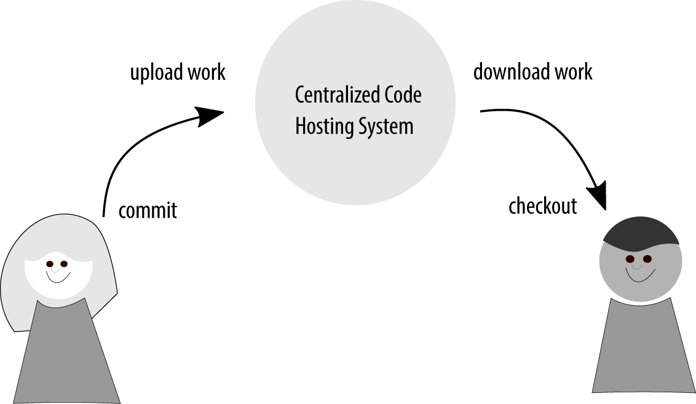
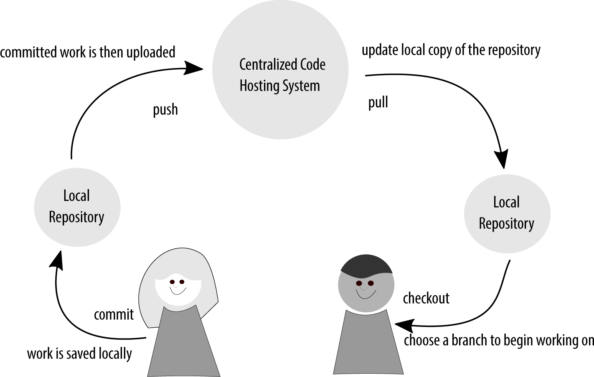
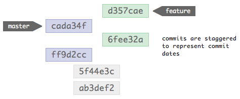
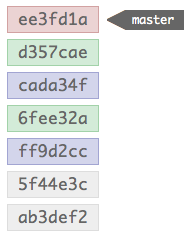
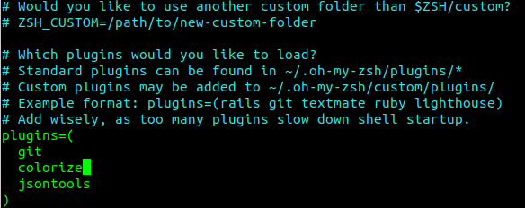

GIT
An Introduction to Version Control
by Sajeev Nair
Types Version Control
Subversion
A centralized approach
- You save to the same place as everyone else
- When others save their work, you get affected
Subversion
GIT
A distributed approach
- Each person works independently from the centralized code
- All changes are saved to the local repository
- When changes are ready, connect to remote, push branch to repository
GIT
Under the Hood
Git Object Model
- BLOB
- Tree
- Commit
- Tag

Branching
What are Branches?
They are a copy of the source tree.
Or, are they
So, what are branches then?
A pointer to a commit, with a name.
Nothing is created, moved or deleted.
That pointer points to the latest commit, keeps geting updated.
What is HEAD?
References the latest commit
You could say it references the branch
Moving HEAD
Move to parent
GIT CHECKOUT HEAD^
Move back by 3 commits
GIT CHECKOUT HEAD~3
Demo
Visual ExampleMerges & Rebase
What is a Merge?
Exactly what is sounds like, merging forked history.
Merge Example
 Demo
Visual ExampleBut wait, there's Fast forward >>
Squash merge & Bitbucket
Rebasing
Interactive Rebase
git rebase -i HEAD~X
- pick: leave as-is (default)
- edit: separate commit into several discrete commits
- squash: combine commits
- delete: remove line referencing commit(s)
- re-order: change the order of the lines
If you remove a line here THAT COMMIT WILL BE LOST.
How does it stop?
- If things go right, it will stop on its own.
-
If there are tears, you can abort the process:
$ git rebase --abort
Demo
Visual ExampleThe Golden Rule
The golden rule of git rebase is to never use it on public branches.
The Force
git push --force
git push --force-with-lease
tldr
pull => fetch + merge merge --no-ff => forces a merge commit object (“true merge”) merge --ff-only => fast forward (graph looks like rebase) merge --squash => compress commits to one; then merge rebase => forward-port local commitsUseful Commands
Revert
git revert HEAD
git revert e3ed4d
git revert -m 1 4e3def
Cherry Pick
one or more commits
git cherry-pick d467740 de906d4
In case you needed to cherry pick a merge instead of a commit, you can use:
git cherry-pick -m 1
Cherry Pick range
For Range of commits
git cherry-pick A..B
A should be older than B. If they're the wrong order the command will silently fail.
If you want to pick the range B through D (inclusive) that would be B^..D.
Reset
undo a git add
git reset
to delete the changes locally use --hard
to pop out a commit to the void
git reset HEAD~
Stash
git stash
git stash pop
Assume unchanged
git update-index --assume-unchanged
ohmyzsh git
Resources
- Learn Git Branching
- Kata Coda